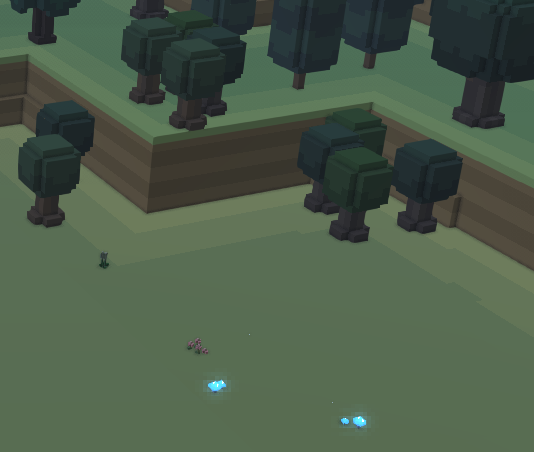
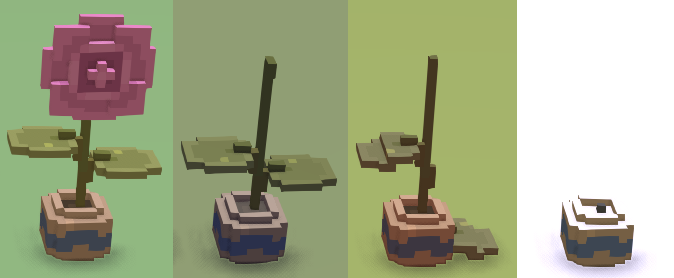

We've learned how to create renewable and non-renewable resources in a previous section. Here we'll see how we can add them to an existing biome so that they spawn at world generation. For how to create your own biome from scratch, follow this other guide.
Adding new plants to an existing biome
Decide in which biome(s) do you want your plant / tree to spawn. For our example, we'll make the Nightdew plant from the
silent_woodsmod appear in the temperate biome.Create a mixinto to the biome's generation_data file:
"mixintos" : { "stonehearth/data/biome/temperate_generation_data.json" : "file(data/biome/temperate_generation_data.json)" }Include your plant in the appropiate places of the biome generation's data. This is how our mixinto looks like:
{ "landscape": { "placement_table": { "silent_woods:plants:nightdew": { "placement_type": "dense", "parameters": { "grid_multiple": 2, "item_density": 0.2, "exclusion_radius": 1 } }, }, "scattered": { "plants": { "weights": { "plains": { "1": { "silent_woods:plants:nightdew": 1 } }, "foothills": { "1": { "silent_woods:plants:nightdew": 2 }, "2": { "silent_woods:plants:nightdew": 1 } }, "mountains": { "1": { "silent_woods:plants:nightdew": 0.1 } } } } } } }Inside the "landscape" section, we added our plant inside the "placement_table" and "scattered" : { "plants" : {} } groups.
The entries inside "placement_table" are the aliases of our plants, and contain the placement properties (to spawn them isolated or in clusters).
Then, in the "scattered" : { "plants" : {} } section we have the "weights" for the different terrain elevations. Each number key inside "plains", "foothills" and "mountains" represents a terrain elevation. Inside of them, we declare our plant's alias again and assign a weight to it (the weights are calculated with all the plants inside that entry).
This way we determine how often compared to other plants will our plant appear for each terrain elevation.
Now we can test and see if our plant appears in the temperate biome: 
About trees
Trees have a particularity in the biome files. If we organized them in the same way than the trees from the stonehearth mod, we can include them inside the "trees" section of our biome's generation_data file. This depends on the structure of the aliases for the trees.
If our tree aliases end by ":small", ":medium", ":large" or ":ancient", these suffixes can be used for determining sizes in the generation data. For example:
"trees": {
"sizes": {
"stonehearth:trees:oak": {
"small": 0,
"medium": 8,
"large": 18,
"ancient": {
"percentage": 0
}
}
},
"weights": {
"plains": {
"1": {
"stonehearth:trees:oak": 1
}
},
"foothills": {
"1": {
"stonehearth:trees:oak": 4
},
"2": {
"stonehearth:trees:oak": 2
}
}
}
}
Notice that the keys inside "sizes" and "weights" are not the full alias of the tree, just the common part before the last colon.
Then, in the sizes section, we can specify the sizes for each tree (which match with the suffixes of their aliases). These are specified as thresholds (values need to be 0 or higher), except for the "ancient" variant, which has a percentage. These thresholds are used in the noise functions that determine tree placement depending on the terrain features (water, hills, etc).
We can use other names for the sizes of our trees (as long as we follow this pattern), or have less different sizes.
Don't forget to add the individual full aliases of the trees inside the "placement_table" section too!
Always use the stonehearth/data/biome/temperate_generation_data.json file as an example, it's the one that has more comments for each parameter. You can also use the desert_generation_data.json or arctic_generation_data.json files as a template to start your own biomes.
Seasonal variants
Biomes can have different colors and weather per season (you can invent your own seasons too). In addition to them, plants and trees can have different models per season if you want.
These are the steps to make any entity have different models per season:
In the JSON file where we define its QB models, we have to add a model variant per season.
"model_variants": { "default": { "models": [ "file(potted_flower_summer.qb)" ] }, "autumn": { "models": [ "file(potted_flower_autumn.qb)" ] }, "winter": { "models": [ "file(potted_flower_winter.qb)" ] }, "spring": { "models": [ "file(potted_flower_spring.qb)" ] } }Then, we have to add "stonehearth:seasonal_model_switcher" also inside "components":
"stonehearth:seasonal_model_switcher": { "stonehearth:biome:temperate": { "spring": "spring", "summer": "default", "autumn": "autumn", "winter": "winter" } }In this component, we can add an entry for each biome that has our plant. The keys are the biome aliases, and the values map seasons (as defined in each biome JSON file) with names of our model variants that we defined above. In our example, we map the "default" model variant for the "summer" season.
If instead of a biome alias we use "*" as the key, the seasonal model variants will be applied for all the biomes that have these seasons defined, even the modded ones, which is useful:
"stonehearth:seasonal_model_switcher": { "*": { "spring": "spring", "summer": "default", "autumn": "autumn", "winter": "winter" } }When a season changes, the first days of the new season will be of transition. During this period the terrain will change its color palette gradually, and the entities that have seasonal variants will swap their models at a random moment during the transition. They will also prefer switching models during the night (so there will be nights when no model will change and other nights when several of them will be swapped).
To test, it's faster to just choose different starting seasons and check that the plant has spawned in the correct seasonal variant, since seasons take a long time to pass even while playing at higher speeds.
